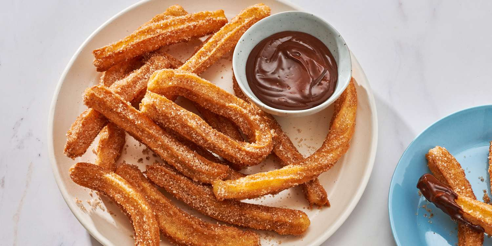
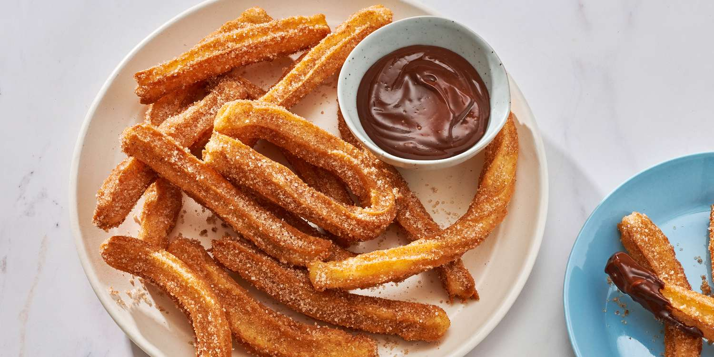
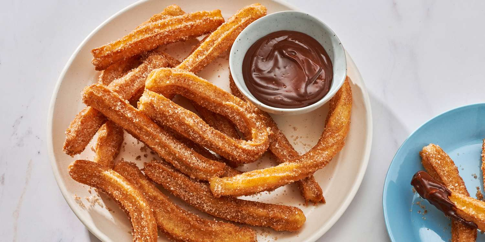
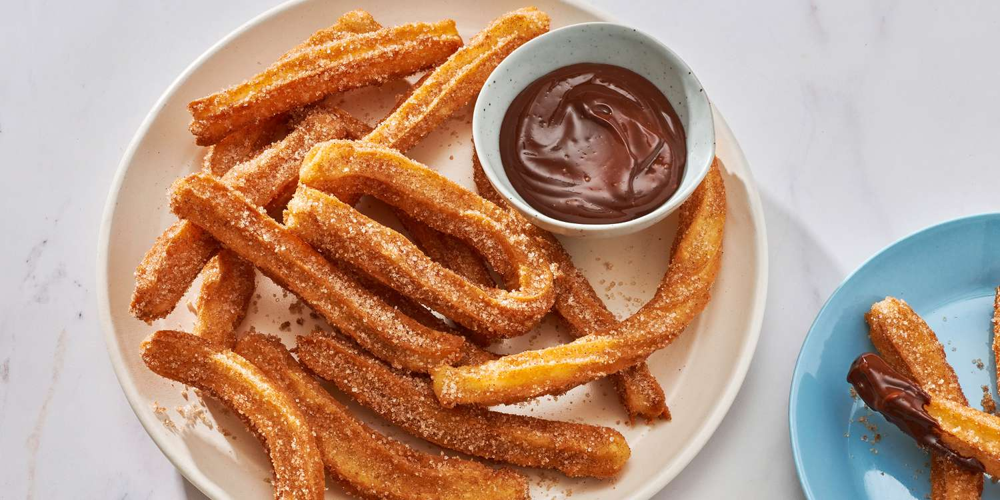

pozolli, meaning cacahuazintle, a variety of corn or maize) is a traditional soup or stew from Mexican cuisine. It is made from hominy with meat (typically chicken or pork), and can be seasoned and garnished with shredded lettuce or cabbage, chili peppers, onion, garlic, radishes, avocado, salsa or limes. Known in Mesoamerica since the pre-Columbian era, the stew is common across Mexico and neighboring countries, served both as a day-to-day meal and as a festive dish.
A taco is a traditional Mexican dish consisting of a small hand-sized corn- or wheat-based tortilla topped with a filling. The tortilla is then folded around the filling and eaten by hand. A taco can be made with a variety of fillings, including beef, pork, chicken, seafood, beans, vegetables, and cheese, and garnished with various condiments, such as salsa, guacamole, or sour cream, and vegetables, such as lettuce, coriander, onion, tomatoes, and chiles.Tacos are a common form of antojitos, or Mexican street food, which have spread around the world.
is a traditional Mesoamerican dish made of masa, a dough made from nixtamalized corn, which is steamed in a corn husk or banana leaves. The wrapping can either be discarded prior to eating or used as a plate. Tamales can be filled with meats, cheeses, fruits, vegetables, herbs, chilies, or any preparation according to taste, and both the filling and the cooking liquid may be seasoned.
is a type of fried dough from Spanish and Portuguese cuisine, made with choux pastry dough piped into hot oil with a piping bag and large closed star tip or similar shape. They are also found in Latin American cuisine, Philippine cuisine and in other areas that have received immigration from Spanish and Portuguese-speaking countries, especially in France and the Southwestern United States. It is a dish that Mexico inherited from spain, but it has gain mass attration in Mexican style from other countrys.